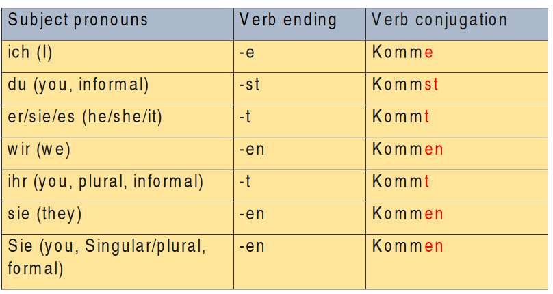
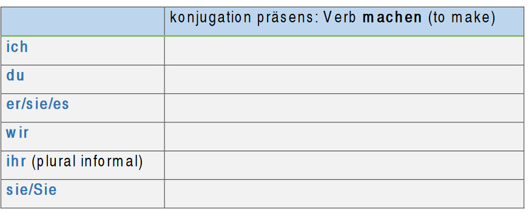
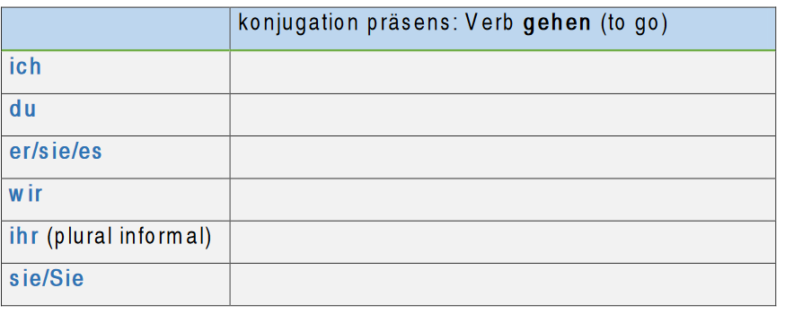
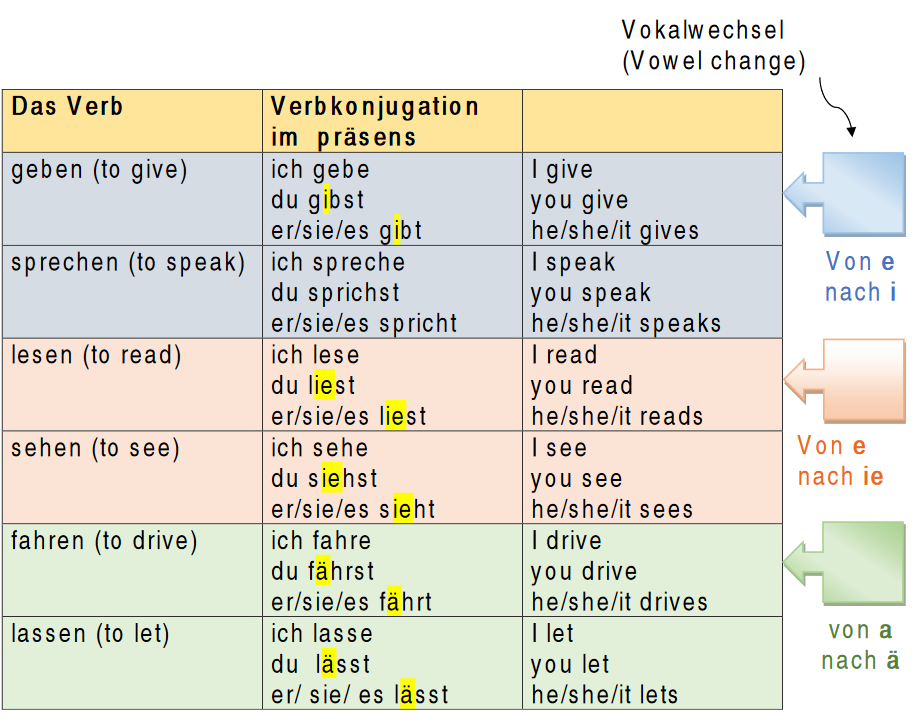

Verb variation – Verbvariation
Regelmäßige / Schwache Verben (Regular / weak verbs)
The regular verbs in German always have the same verb ending. When we conjugate the regular verbs, we change only the verb ending '-en or '-n'.
How to conjugate the verbs?
Ex: kommen (to come)
Drop the verb ending ‘-en’ then add new ending to the verb stem.
Verbkonjugation (Verb conjugation):
The verbs are conjugated by the Subject.
Here you can see an example of the verb ‘kommen’ in present tense:

Übung (exercise):
Ergänzen das Verb in der richtigen Form.
(Complete the verb in the correct form.)


Irregular / strong verbs - Unregelmäßige / Starke Verben
In this kind of verbs, we change the vowel in the stem of the verb in the second and third person singular (du, er, sie ,es ). The plural is conjugated the same as the regular verbs. The following table shows the changes.
